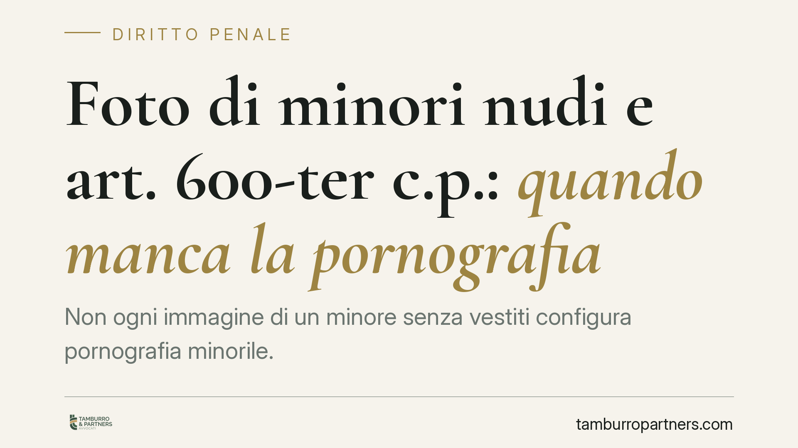

Foto di minori nudi e art. 600-ter c.p.: quando manca la pornografia
Non ogni immagine di un minore senza vestiti configura pornografia minorile. In una recente pronuncia di merito si è ribadito che, in assenza del carattere oggettivamente pornografico del materiale, il reato ex art. 600-ter c.p. non sussiste. La distinzione è decisiva nei contesti familiari, sanitari e documentali, dove la condotta resta estranea all'area penalmente rilevante.

Il caso e la questione giuridica
Una pronuncia di merito è tornata su un tema delicato: a quali condizioni la realizzazione o la detenzione di immagini di minori senza vestiti integri il reato di pornografia minorile previsto dall'art. 600-ter del codice penale.
La risposta non è scontata. La linea di confine tra una fotografia di famiglia, una documentazione clinica e il materiale penalmente rilevante non dipende dalla semplice nudità del soggetto ritratto, ma dalla natura oggettiva di ciò che l'immagine rappresenta.
*Nota: il numero e l'anno della sentenza citata nella fonte originaria non risultano verificabili e vengono pertanto omessi. Il presente contributo si concentra sui principi, non sul singolo provvedimento.*
Inquadramento normativo
L'art. 600-ter, comma 1, n. 1, c.p. punisce chi, utilizzando minori di anni diciotto, realizza esibizioni o spettacoli pornografici ovvero produce materiale pornografico.
Il punto decisivo è la nozione di "materiale pornografico". L'ultimo comma dell'art. 600-ter c.p. (introdotto dalla L. 172/2012, di ratifica della Convenzione di Lanzarote) ne fornisce una definizione normativa: è tale ogni rappresentazione, con qualunque mezzo, di un minore degli anni diciotto coinvolto in attività sessuali esplicite, reali o simulate, o degli organi sessuali del minore per scopi sessuali.
È qui che si colloca il nucleo della valutazione. Il materiale è pornografico quando raffigura attività sessuali esplicite oppure quando riprende gli organi sessuali del minore con una connotazione sessuale. La semplice nudità, di per sé, non soddisfa questi requisiti.
Sul rilievo della finalità dell'autore la giurisprudenza non è univoca. Un orientamento valorizza il carattere oggettivo del materiale; altre pronunce hanno dato peso anche al profilo soggettivo, in particolare quando si tratta di produzione in ambito domestico. Le Sezioni Unite sono intervenute sul tema della produzione di materiale in contesto privato (Cass. SU n. 51815/2018, *status da verificare nel testo integrale*), segnando la complessità dell'accertamento. Resta fermo, in ogni caso, che il primo filtro è la natura oggettivamente pornografica dell'immagine.
Perché la distinzione conta
La portata pratica è ampia. Esistono numerosi contesti in cui immagini di minori non vestiti non hanno alcuna valenza sessuale:
- Ambito familiare: fotografie di bambini durante il bagnetto, al mare, in momenti di vita quotidiana.
- Ambito sanitario: documentazione clinica, immagini a fini diagnostici o di monitoraggio di una patologia.
- Ambito documentale o peritale: materiale raccolto per finalità di tutela, come nell'accertamento di maltrattamenti o lesioni.
In queste ipotesi manca l'elemento costitutivo del reato: il materiale non è pornografico nel senso normativo. L'immagine non rappresenta attività sessuali né riprende gli organi del minore "per scopi sessuali".
Da qui la formula assolutoria più favorevole: "il fatto non sussiste". Essa non attesta semplicemente che l'imputato non ha commesso il fatto, ma che manca un elemento costitutivo del reato. La condotta, cioè, non rientra affatto nella fattispecie penale.
Un confine da maneggiare con cautela
La distinzione, per quanto chiara in linea di principio, è terreno di valutazioni delicate. Il giudice esamina il contenuto dell'immagine, il contesto della realizzazione, le modalità di conservazione e diffusione. Un singolo scatto innocuo inserito in un archivio dal contenuto diverso può assumere un significato differente.
Per questo la prudenza, sia nella gestione sia nella difesa, è essenziale: la valutazione è sempre concreta e non ammette automatismi.
Cosa fare in concreto
- Conservate il contesto documentale. In ambito sanitario o peritale, tenete traccia della finalità, della prescrizione o dell'incarico che giustifica la raccolta delle immagini.
- Non diffondete né condividete materiale che ritrae minori, anche se ritenuto innocuo: la circolazione può mutarne la lettura e il regime giuridico.
- In caso di indagine, non cancellate nulla. La distruzione di materiale può pregiudicare la ricostruzione del contesto che dimostra l'assenza di valenza sessuale.
- Richiedete subito un confronto tecnico-difensivo per valutare la natura oggettiva del materiale alla luce dell'art. 600-ter, ultimo comma, c.p.
- Diffidate delle semplificazioni. L'esito dipende dall'esame del singolo caso, non da regole automatiche.
Disclaimer
Contributo informativo a cura di Tamburro & Partners - Avv. Giuseppe Tamburro. Non costituisce parere legale.
Ogni condominio ha una storia a sé.
Se gestisci un'amministrazione e vuoi un confronto su una specifica questione condominiale, scrivi allo studio. Ti rispondiamo entro un giorno lavorativo.